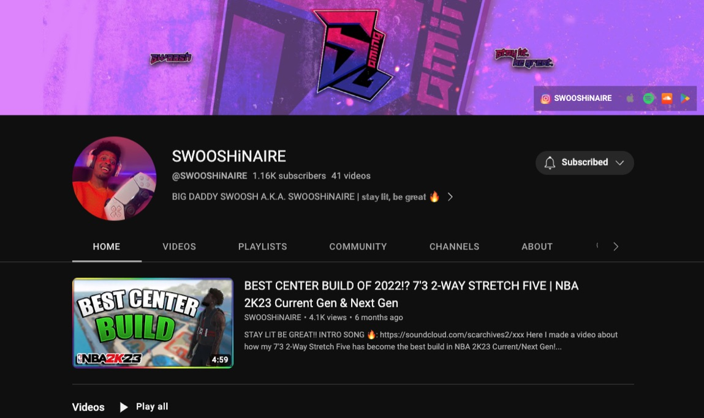

Tyriq Jeshon "SWOOSHiNAIRE" Gilliard
Entrepreneur and Content Creator
"Action cures fear" - David J. Schwartz
Content Creator
As a content creator, I enjoy creating content that serves a purpose for my audience. I have a passion for helping people become more confident and also for entertaining them by making them laugh. I believe that through my content, I can make a positive impact on people's lives and inspire them to be the best version of themselves. Whether it's through videos, social media posts, or blog articles, I strive to create content that is relatable, engaging, and informative.
Producer
As a producer, I've been making music since 2013, and it has been a significant part of my life. I love to record and produce my music, and over time, I've became self-taught in all aspects of music production. I have learned how to mix and engineer my music from home using different sources like YouTube. As a producer, I strive to create music that is unique and reflects my personal style. I believe that music has the power to bring people together and inspire them, and I'm committed to creating music that speaks to my audience.
Basketball
In the basketball category, I've have been playing basketball since I was little. Originally, it was my dream to be in the NBA, but as I grew up, I became more athletic and played in AAU and in the Brookwood Basketball Association for my school cluster. I love the game of basketball, and it has taught me many valuable life lessons such as teamwork, perseverance, and discipline. I am committed to improving your skills as a basketball player and pushing yourself to be the best player I can be. Whether I'm playing for fun or in a competitive setting, basketball is a significant part of my life, and I wouldn't have it any other way.